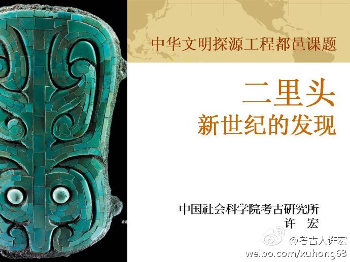

转发微博@考古人许宏:发表了博文 《我的PPT-11～20：探源二里头（张家港，2012-5-21）》 - 今天，在张家港“中国文明起源与形成学术研讨会”上的发言，择要贴上，以飨同好。 网页链接 
《时代》周刊：美国首都华盛顿地区的10个县的富有程度都排在全美前20，其中包括第1，3，4富有的县，以及前15名中的9个。这个地区大部分产业就是联邦政府以及周边产业。华盛顿给联邦政府交的税只相当于联邦政府在给这一地区花销的1/5。网页链接
希腊问题可以这么类比：为了让东亚东南亚长治久安，日本和韩国发起了大东亚共荣圈，各国成为统一经济体，统一货币。中国使用共荣圈的担保借了很多外债，然后因为挥霍腐败还不起了。这时候日本出来说：我可以替你还钱，前提是你要进行财政改革，中国人一怒说，老子就是打死不改革！小日本给不给钱由你。